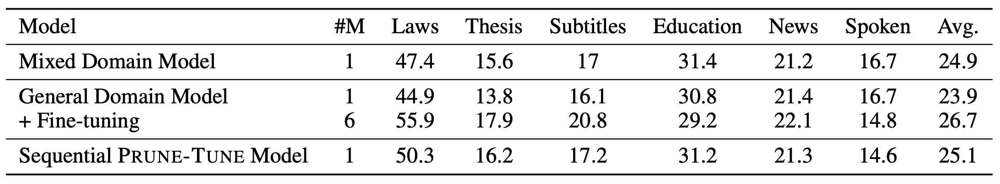

Overview
Prune-Tune is a novel domain adaptation method via gradual pruning. It learns tiny domain-specific sub-networks during fine-tuning on new domains. Prune-Tune alleviates the over-fitting and the degradation problem without model modification. Furthermore, Prune-Tune is able to sequentially learn a single network with multiple disjoint domain-specific sub-networks for multiple domains.
Results
We conducted experiments on both single domain adaptation and multiple domain adaptation to show the effectiveness and flexibility of Prune-Tune. Experiments show that the proposed Prune-Tune outperforms fine-tuning and several strong baselines and it is shown to be much more robust compared to fine-tuning due to the complete retainment of the general information. Beyond that, Prune-Tune can be extended to adapting multiple domains by iteratively pruning and tuning.
Results of Single Domain Adaptation on En-De
Results of Multiple Domain Adaptation on En-De
Results of Multiple Domain Adaptation on Zh-En

Citation
@inproceedings{jianze2021prunetune,
title={Finding Sparse Structures for Domain Specific Neural Machine Translation},
author={Jianze Liang, Chengqi Zhao, Mingxuan Wang, Xipeng Qiu, Lei Li},
booktitle={Proceedings of the AAAI Conference on Artificial Intelligence},
year={2021}